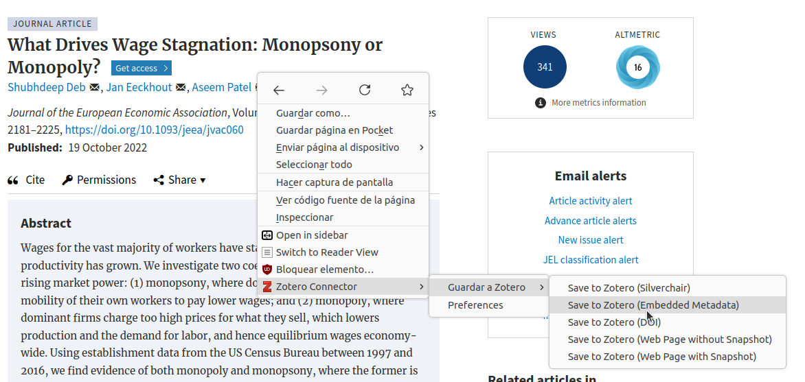
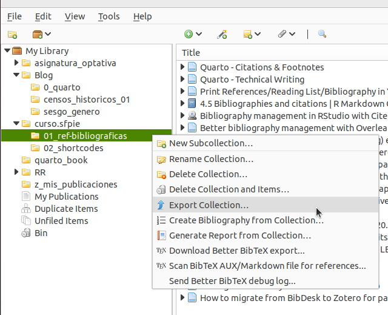
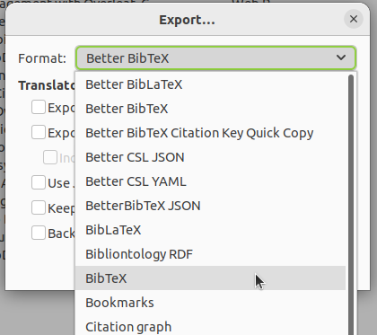

![]()
1 Intro
Gestionar y poner en el formato adecuado las referencias bibliográficas no es muy divertido; una forma de hacerlo es a mano. No problem, pero creo que es más sensato gestionarlas con un gestor bibliográfico. Por supuesto que esto tiene un coste de entrada pero no es demasiado alto y el hacerlo facilita después la gestión de estas. Entre los beneficios que tiene gestionar las referencias con un gestor están: tener las referencias organizadas y a mano para poder reusarlas, evitar errores de la transcripción a mano o por copia y pega, facilita la organización y clasificación de las citas en categorías y, principalmente, posibilita la generación de listados bibliográficos con un simple clic en diversos formatos (APA, Chicago etc …)
Hay muchos gestores bibliográficos. Los más usados son Mendeley y Zotero, aunque últimamente oigo hablar mucho de CiteDrive.
No soy un power user de gestores bibliográficos pero uso cada vez más Zotero. Zotero es un gestor bibliográfico de código abierto que cuenta con extensiones para los principales navegadores (Firefox, Vivaldi, Chrome, Safari, Opera, …) que permiten guardar referencias, ya sean estas artículos, libros, páginas web, libros electrónicos, imágenes, audio, vídeo digital etc … con un solo clic. Una vez añadida una referencia, se pueden añadir, notas, etiquetas y relacionarla con otras referencias; además, las referencias se pueden organizar en colecciones. Ilya Kashnitsky tiene aquí un fantástico post donde explica las ventajas de Zotero y cómo usarlo.
El caso es que los gestores bibliográficos, ademas de ayudarnos a gestionar nuestras referencias bibliográficas, nos permiten exportar y generar listados de referencias en distintos formatos. Veamos cómo hacerlo en el entorno Quarto.
2 ¿Cómo gestionar las referencias en Quarto?
Una vez tenemos las referencias en Zotero, o en otro gestor bibliográfico, podemos crear una colección con las referencias que usaremos en un proyecto. A partir de ahí se puede fácilmente crear listados con las referencias en múltiples formatos, incluido BibTeX que es el que usa Latex y el que usaremos con Quarto1.
Para generar nuestro listado de referencias con Quarto tenemos que:
Tener las referencias en Zotero, mejor en una colección
generar un fichero
.bibcon los metadatos de las referenciasIncluir la ruta al archivo
.biben el yaml de nuestro documento.qmdPor defecto Quarto generará el listado de referencias en formato Chicago Manual of style 17th ed.. Si quieres usar otro formato tendrás que incluir en el yaml de nuestro documento
.qmdla ruta al fichero.cslcon el estilo que queramos dar al listado de referencias.
2.1 Introducir la referencias
Con Zotero
Lo primero es tener las referencias en un gestor bibliográfico, por ejemplo Zotero. No explicaré en detalle este paso pero puedes ver la documentación oficial, por ejemplo esta Quick Start Guide.
Tienes que instalar Zotero y luego una extensión para tu navegador favorito, de esta forma puedes añadir una referencia a tu base de datos con un solo clic: solo tendrás que ir a la pagina web donde este el articulo/vídeo/libro o lo que sea, y pinchar con el botón derecho del ratón y seleccionar Zotero Connector > Guardar a Zotero > Save to Zotero (Embedded metadata). Puedes ver un ejemplo en la imagen siguiente:

Desde RStudio
También podemos añadir referencias directamente desde RStudio. Para ello tenemos que usar el “editor visual” de RStudio. Aquí lo explica Mine Çetinkaya-Rundel para el caso de que tengamos el DOI de la referencia. Simplemente hay que:
- Activar el editor visual > Insert > Citation … > From DOI (en el menú de la izquierda) > Pegar el DOI y pinchar en Search > una vez ha encontrado la referencia, solo queda pinchar en Insert
Con esta secuencia se generará un fichero .bib ,si es que no hay uno ya asociado al documento .qmd. Si ya hubiese un documento .bib, se añadiría la referencia a este.
2.2 Creación del fichero .bib
Para generar las citas y bibliografía necesitaremos un archivo .bib que contenga los metadatos de las referencias que queremos introducir en nuestro archivo .qmd. Este archivo .bib se puede generar de muchas maneras, por ejemplo a mano copiando y pegando, o con Zotero, o desde RStudio, o … Veamos como se hace desde Zotero. Como puedes ver en la imagen de bajo tengo distintas colecciones en Zotero, selecciono la carpeta/colección que quiero exportar con el botón derecho del ratón y pincho en “exportar”. Solo queda seleccionar el formato de exportación. Puedes elegir “better BibTex” o “Bibtext”, los dos funcionarán. Se nos creará un fichero .bib con los metadatos de las referencias bibliográficas que vamos a usar.


Creando el fichero .bib desde Zotero
El fichero .bib contendrá un listado con los metadatos de nuestras referencias; algo como:
@article{rodríguez-sanchez2016,
title = {Ciencia reproducible: ¿qué, por qué, cómo?},
author = {{Rodríguez-Sanchez}, Francisco and {Pérez-Luque}, {Antonio Jesús} and Bartomeus, Ignasi and Varela, Sara},
year = {2016},
month = {08},
date = {2016-08-22},
journal = {Ecosistemas},
pages = {83--92},
volume = {25},
number = {2},
doi = {10.7818/ecos.2016.25-2.11},
url = {http://dx.doi.org/10.7818/ECOS.2016.25-2.11}
}
@article{wickham2010a,
title = {Graphics for Statistics and Data Analysis with{\emph{R}}},
author = {Wickham, Hadley and Grolemund, Garrett},
year = {2010},
date = {2010},
journal = {Journal of Statistical Software},
volume = {36},
number = {Book Review 3},
doi = {10.18637/jss.v036.b03},
url = {http://dx.doi.org/10.18637/jss.v036.b03},
langid = {en}
}2.3 Referencia el fichero bib` en el yaml
Una vez tenemos el fichero .bib con los datos de nuestras referencias, tenemos que referenciarlo en el yaml de nuestro documento .qmd; concretamente así:
En este caso el fichero .bib y el fichero .qmd estarían en la misma carpeta. Si el fichero .bib estuviese en una subcarpeta, tendríamos que especificar la ruta, quedando el yaml como:
2.4 Estilo de las referencias
Ya he dicho que por defecto Zotero (y Pandoc) usan el Chicago Manual of Style pero podemos cambiar el estilo usando un archivo .csly referenciando en nuestro yaml:
---
title: "Mi Documento"
bibliography: my_references.bib
csl: bib_files/apa_7.csl
---Podemos descargar ficheros .csl con multitud de formatos para nuestras citas del repositorio de Zotero, aquí . CSL significa Citation Style Language. BibTex es limitado para poder almacenar adecuadamente determinadas referencias, por ejemplo no puede diferenciar entre por ejemplo magazine/newspaper articles and journal articles, por eso finalmente
3 Inclusión de las referencias
En la sección anterior hemos dispuesto todo para poder incluir en nuestros documentos .qmd las referencias bibliográficas usando ficheros .bib. Sí, pero aún no las hemos incluido, ¿cómo lo hacemos? Sin hacer nada, si el yaml incluye un fichero .bib, se incluirá automáticamente un apartado al final con las referencias del fichero que hayamos citado en nuestro .qmd. También podemos incluir explicitamente ese apartado así:
Si quisiéramos incluir todas las referencias presentes en el fichero .bib, incluso aunque no las hayamos citado en el texto, tendríamos que incluir en nuestro yaml lo siguiente:
---
nocite: |
@*
---4 Inclusión de citas
Generalmente en el texto de un artículo se citan los articulos que figuran en el apartado de referencias.
Tenemos ya un fichero .bib con las referencias, ¿cómo incluimos citas a ellos en nuestro fichero .qmd? Podemos seguir escribiendo y gestionando estas citas a mano, pero si queremos hacerlo “automaticamente”2 tenemos que saber cómo hacerlo.
Imagina que tenemos un fichero llamado my_references.bib con 2 referencias, por ejemplo:
@article{rodríguez-sanchez2016,
title = {Ciencia reproducible: ¿qué, por qué, cómo?},
author = {{Rodríguez-Sanchez}, Francisco and {Pérez-Luque}, {Antonio Jesús} and Bartomeus, Ignasi and Varela, Sara},
year = {2016},
month = {08},
date = {2016-08-22},
journal = {Ecosistemas},
pages = {83--92},
volume = {25},
number = {2},
doi = {10.7818/ecos.2016.25-2.11},
url = {http://dx.doi.org/10.7818/ECOS.2016.25-2.11}
}
@article{wickham2010a,
title = {Graphics for Statistics and Data Analysis with{\emph{R}}},
author = {Wickham, Hadley and Grolemund, Garrett},
year = {2010},
date = {2010},
journal = {Journal of Statistical Software},
volume = {36},
number = {Book Review 3},
doi = {10.18637/jss.v036.b03},
url = {http://dx.doi.org/10.18637/jss.v036.b03},
langid = {en}
}Fíjate que cada referencia tiene una clave que es lo que tendremos que usar para generar citas referentes a ellos; en concreto las claves están en la primera linea de cada referencia; concretamente son: rodríguez-sanchez2016 y wickham2010a
Sintaxís para las citas
En realidad Quarto, utiliza Pandoc, otro programa, para procesar archivos BibTeX y convertirlos al formato de lenguaje de estilo de citas (CSL) estándar, que luego usará para formatear referencias en formato Chicago, APA, MLA o lo que sea3.
Quarto usa el mismo estándar que Pandoc para las citas; de forma que las citas van entre corchetes y separadas por punto y coma (;), etc …
Por tanto, una vez tenemos el fichero .bib y lo hemos referenciado en nuestro yaml, podemos generar citas de la siguiente manera:
“Un estudio científico es reproducible si …” (Rodríguez-Sanchez et al., 2016, p. 84)
R es un lenguaje de programación … (véase Rodríguez-Sanchez et al., 2016, p. 84; y Wickham & Grolemund, 2010, Capítulo 1)
R es al menos tan bueno como Phyton ( Wickham & Grolemund (2010); Rodríguez-Sanchez et al. (2016))
Según Rodríguez-Sanchez et al. (2016), pp. 84, un estudio científico es reproducible si …
Wickham & Grolemund (2010) dicen que ….
Wickham & Grolemund (2010, p. 33) dicen que …
Wickham dice que R es un lenguaje funcional (2010)
- "Un estudio científico es reproducible si ..." [@rodríguez-sanchez2016, pp. 84]
- R es un lenguaje de programación ... [véase @rodríguez-sanchez2016, pp. 84; y @wickham2010a, cap. 1]
- R es al menos tan bueno como Phyton ( @wickham2010a; @rodríguez-sanchez2016)
- Según @rodríguez-sanchez2016, pp. 84, un estudio científico es reproducible si ...
- @wickham2010a dicen que ....
- @wickham2010a [p. 33] dicen que ...
- Wickham dice que R es un lenguaje funcional [-@wickham2010a]
La documentación oficial de Quarto para citas y bibliografías está aquí. La documentación de Pandoc para las citas está aquí.
Referencias
Notas
BibTex, que fue creado para usar con Latex, utiliza ficheros
.bibque es una forma conveniente para almacenar bibliografía en texto plano.↩︎En realidad las citas hay que escribirlas a mano, pero si las incluyes con la sintáxis adecuada, hará que cada cita tenga un enlace a la referencia↩︎
BibTex fue creado para usar con Latex, utiliza ficheros
.bibque es una forma conveniente para almacenar bibliografía en texto plano, pero BibTex es limitado para poder almacenar adecuadamente determinadas referencias, por ejemplo no puede diferenciar entre por ejemplo magazine/newspaper articles and journal articles. Zotero usa the CSL standard que también usa Pandocs.↩︎